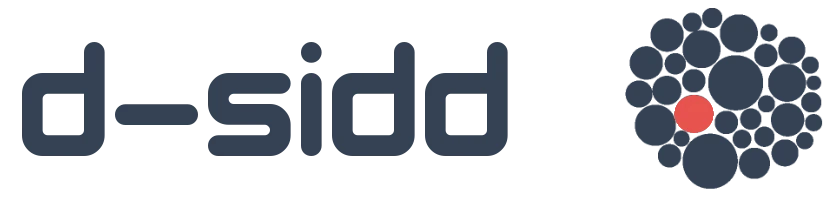

Accueil
Services
Références
Equipe & Contact
L'atelier
C'est quoi l'atelier
Thématiques
Analyse en réseaux
Les entrepreneur.es des CAE
Circuits-Courts
Emploi des territoires
Implantation des activités économiques
Occupation du sol
Qualité de vie
Tiers-Lieux
Végétalisation des espaces artificialisés
Ressources R
Premiers pas en cartographie
D-SIDD, Données du sens
Nos références
Mise à jour janvier 2025